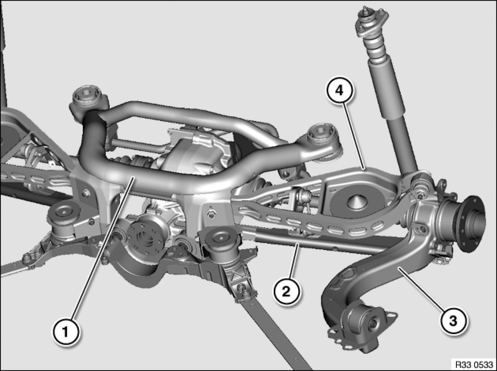

Differential Assembly: Adjustments
33 00 ... - Rear axle: wheel/chassis alignment check must be carried out after the following work

A wheel/chassis alignment check must be carried out after the following work:
- Release of following screw/bolt connections:
- Rear axle carrier to body
- Bearing block to trailing arm / body
- Upper control arm to rear axle carrier / trailing arm
- Lower control arm to rear axle carrier / trailing arm
- Replacement of following parts:
1. Rear axle carrier / rubber mount
2. Lower control arm / rubber mount
3. Trailing arm / rubber mount / bearing block / ball joint
4. Upper control arm / rubber mount / ball joint